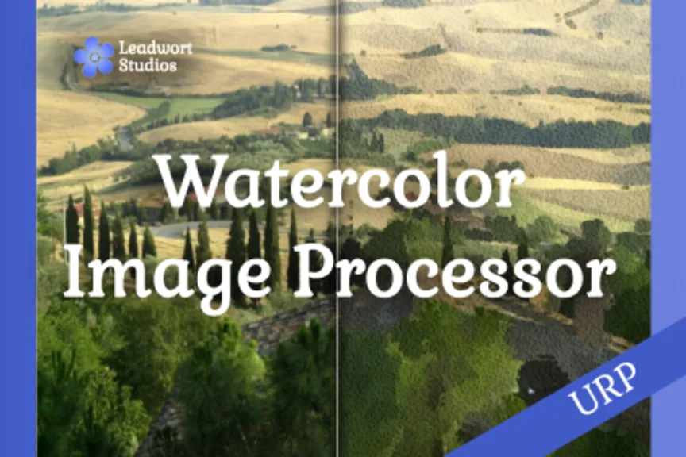
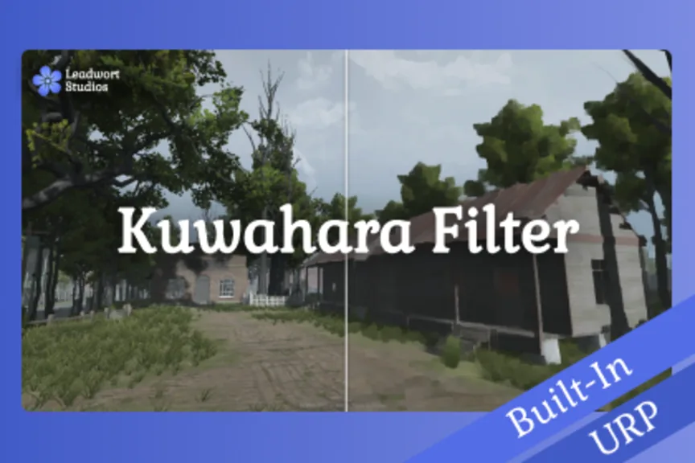
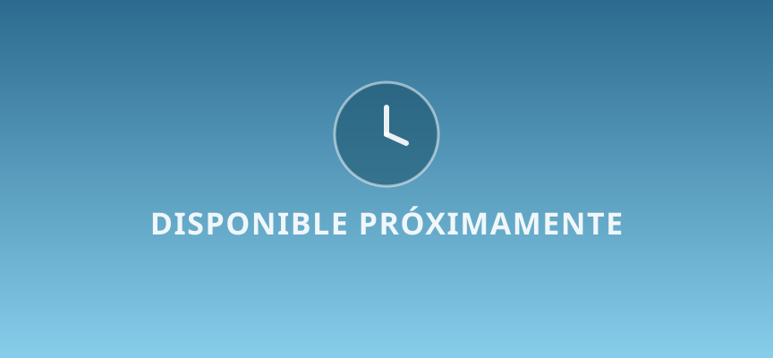
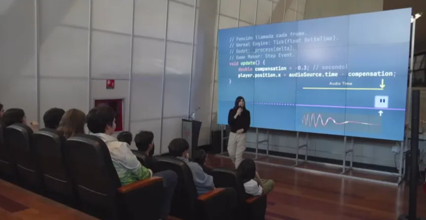
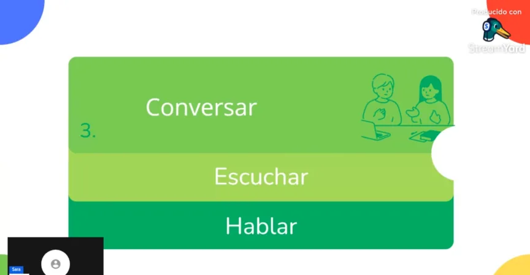
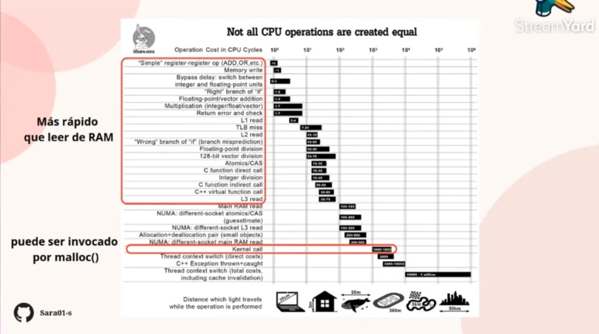
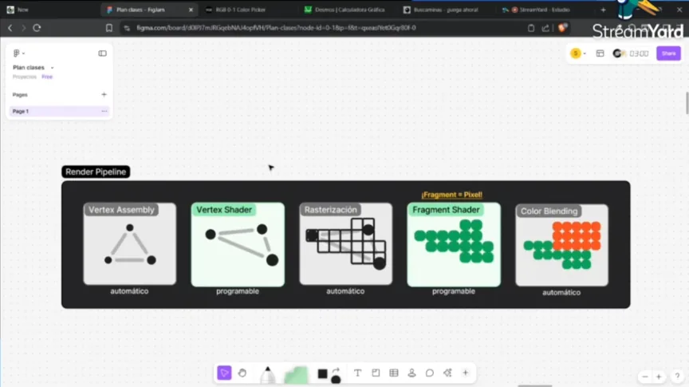

Hello!Sara San Martín, Game Developer and Designer
I'm Sara San Martín, professional Game Developer and Designer.
I specialize in C++ and C#, with 6 years of experience in Unity development.
My largest project to date has been the design and development of a complete custom
animation software.
PROJECTS

Watercolor Processor 

Kuwahara Filter
Custom Game Engine
Co-Authored Assets
Credited in: The Eightfold Path
Custom Animation Software

Minecraft Shaders with GLSL

C++ 3D Vulkan Renderer
Blog: Rendering Fur in games

C++ ECS API
Pong made in C and OpenGL
TALKS

Game engines

Hover meAudio synchronization

Hover meSocial Skills

Hover meData-Oriented Programming

Hover meIntroduction to Shaders
GAMES
What would you do?
Just One More Song
Short platformer experience
CONTACT ME
Have a project in mind, a role to fill, or just want to talk about graphics programming? Write me.